Theorem interval_is_nat of type Forall¶
from the theory of proveit.numbers.number_sets.natural_numbers¶
see dependencies
In [1]:
import proveit
# Automation is not needed when only building an expression:
proveit.defaults.automation = False # This will speed things up.
proveit.defaults.inline_pngs = False # Makes files smaller.
%load_theorem_expr # Load the stored theorem expression as 'stored_expr'
# import the special expression
from proveit.numbers.number_sets.natural_numbers import interval_is_nat
In [2]:
# check that the built expression is the same as the stored expression
assert interval_is_nat.expr == stored_expr
assert interval_is_nat.expr._style_id == stored_expr._style_id
print("Passed sanity check: interval_is_nat matches stored_expr")
In [3]:
# Show the LaTeX representation of the expression for convenience if you need it.
print(interval_is_nat.latex())
In [4]:
interval_is_nat.style_options()
Out[4]:
In [5]:
# display the expression information
interval_is_nat.expr_info()
Out[5]:
| core type | sub-expressions | expression | |
|---|---|---|---|
| 0 | Operation | operator: 6 operand: 2 | 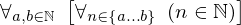 |
| 1 | ExprTuple | 2 | 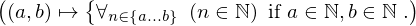 |
| 2 | Lambda | parameters: 25 body: 3 | 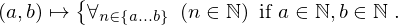 |
| 3 | Conditional | value: 4 condition: 5 | 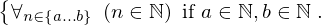 |
| 4 | Operation | operator: 6 operand: 10 | 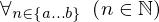 |
| 5 | Operation | operator: 8 operands: 9 | 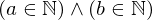 |
| 6 | Literal |  | |
| 7 | ExprTuple | 10 | 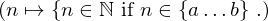 |
| 8 | Literal |  | |
| 9 | ExprTuple | 11, 12 |  |
| 10 | Lambda | parameter: 22 body: 13 | 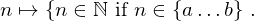 |
| 11 | Operation | operator: 19 operands: 14 |  |
| 12 | Operation | operator: 19 operands: 15 |  |
| 13 | Conditional | value: 16 condition: 17 | 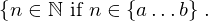 |
| 14 | ExprTuple | 26, 21 |  |
| 15 | ExprTuple | 27, 21 | 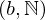 |
| 16 | Operation | operator: 19 operands: 18 |  |
| 17 | Operation | operator: 19 operands: 20 |  |
| 18 | ExprTuple | 22, 21 |  |
| 19 | Literal |  | |
| 20 | ExprTuple | 22, 23 | 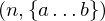 |
| 21 | Literal |  | |
| 22 | Variable |  | |
| 23 | Operation | operator: 24 operands: 25 |  |
| 24 | Literal |  | |
| 25 | ExprTuple | 26, 27 |  |
| 26 | Variable |  | |
| 27 | Variable |  |